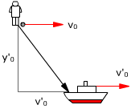
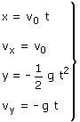
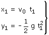
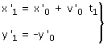
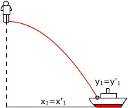
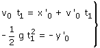
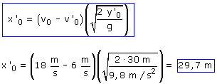

 |
El observador está colocado junto al saco en el momento de soltarlo. Inicialmente el saco tiene la misma velocidad que el ultraligero que le transportaba |
Ecuaciones del movimiento del saco: |
Ecuaciones del movimiento del barco: |
||
 |
Parámetros: v0 = 18 m/s, g = 9,8 m/s2 |
 |
Parámetros: x'0 (Incógnita), v'0 = 6 m/s, y'0 = 30 m |
Como el proyectil se mueve en dos dimensiones, hay que dar las ecuaciones del movimiento del tanque en dos dimensiones también (Aunque una de las coordenadas sea constante)
En el instante t1 la posiciones de saco y barco serán:
 |
 |
Si se ha producido el encuentro las posiciones serán iguales: x1 = x'1 , y1 = y'1
 |
 |

Habrá que soltar el saco 29.7 m por detrás del barco